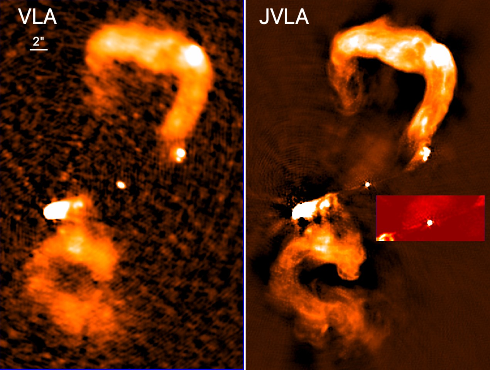
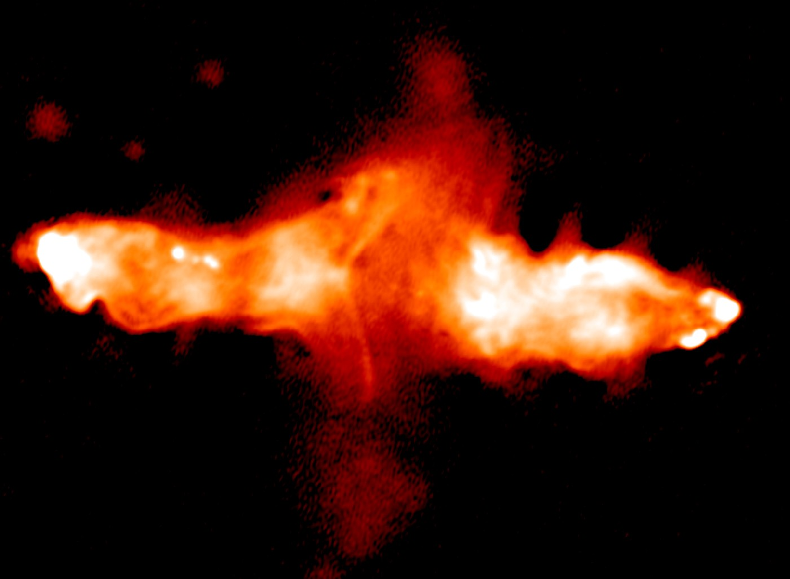
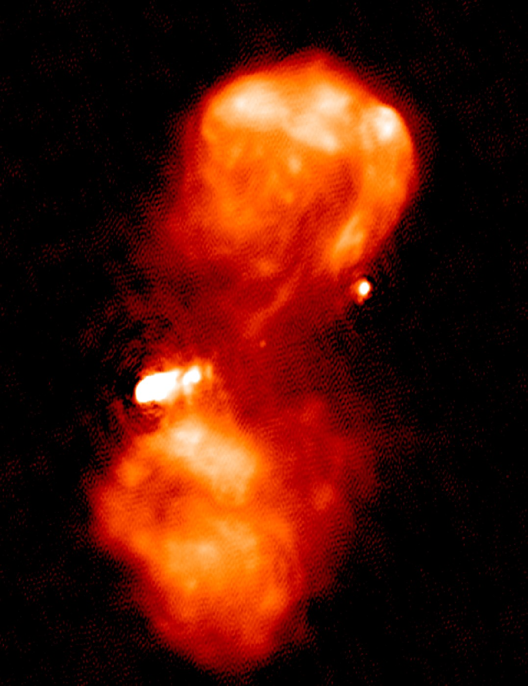
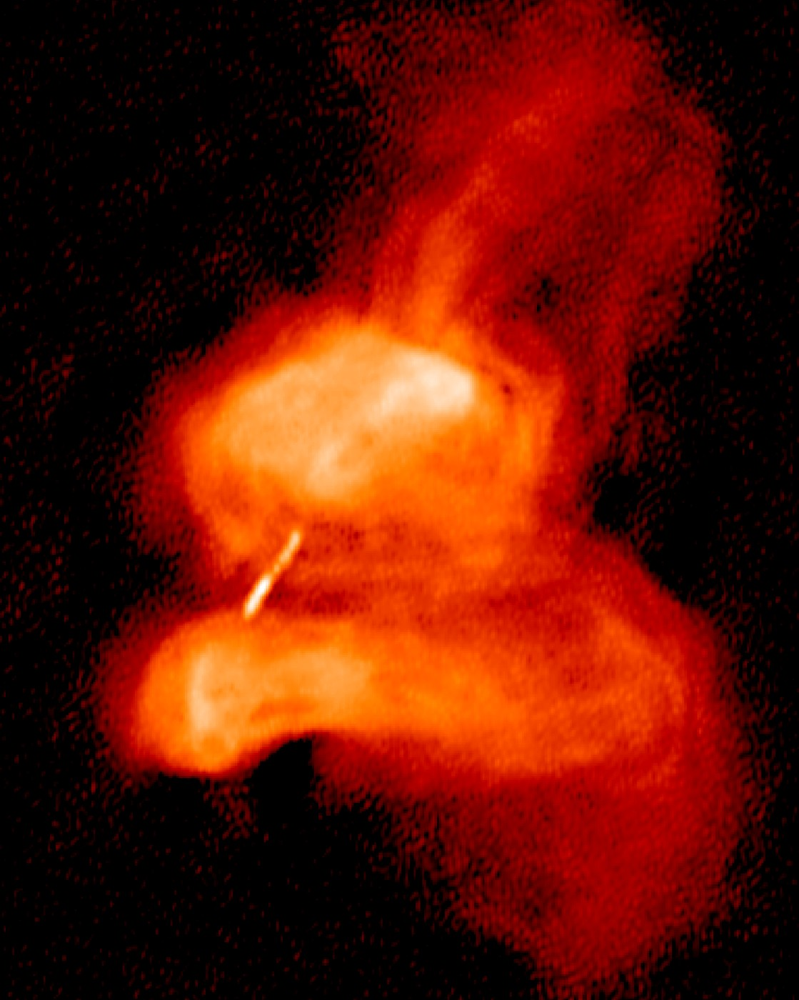

A gold-standard legacy dataset for the brightest radio galaxies in the northern sky: 73 3CRR sources imaged in L and C bands across the JVLA A, B, C and D arrays, in full polarisation, with no proprietary period.

The 3CRR catalogue comprises the brightest radio galaxies in the northern sky and has been the target of multi-wavelength observatories for decades, giving it the richest ancillary coverage of any radio-galaxy sample. Surprisingly, most of it has never been observed with the JVLA since the 2012 upgrade: 57 of our 73 targets have no L- or C-band JVLA observations in any array configuration.
This programme closes that gap. We are imaging every 3CRR source at z < 1 with angular size between 20″ and 240″ — 73 objects spanning a wide range of morphologies and environments — producing thermal-noise-limited total intensity, spectral and polarisation maps. More than 30 of them have known X-ray jets and hotspots, and all are suspected to host large-scale filaments.
With SKA-MID a decade away and poor sensitivity in the northern hemisphere in the interim, this will be the only legacy dataset of its kind for the foreseeable future.
Broad-band spectra from 150 MHz to 6 GHz test Fermi-I acceleration as a function of spatial region, morphology and environment — and probe the compact hotspot complexes and offset synchrotron X-ray hotspots that the standard picture does not explain.
Thin collimated filaments inside and outside the lobes require enhanced magnetic fields and appear linked to their environments. Low-surface-brightness polarimetry traces plasma longevity on the scales associated with AGN feedback.
The ratio of radiating to non-radiating particles is a crucial parameter in semi-analytic models of radio-source evolution, yet remains poorly measured. Sensitive spectral and polarimetric maps break the degeneracies that have blocked it.
Per source we observe 1 hour in the A-array, 30 minutes in B, 15 minutes in C and 5 minutes in D, only where those data are missing from the archive or from our other projects. Combined, this reaches theoretical noise levels of 10 µJy beam−1 at L-band and 5 µJy beam−1 at C-band, except for the brightest sources where dynamic range rather than depth is the limit.
Given the scientific potential of the sample, the observations are released instantaneously, with no proprietary period.


